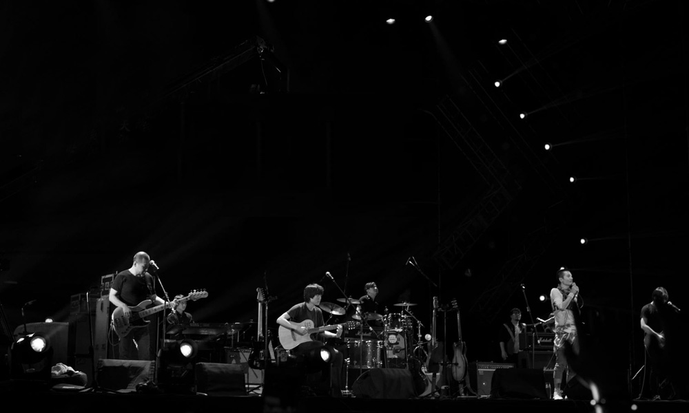

魔鬼与尘埃：大急流城'05
2019-10-16 09:51:32
自成立之初就以“坚持做中国特色的摇滚乐”为宗旨，将东北二人转的音乐元素与现代摇滚乐不露声色的嫁接。夸张的表演和舞台造型、戏谑的唱词、民乐的奇幻运用，构成了二手玫瑰独特的乐队风格。 二手玫瑰于2003年1月，发行第一张同名专辑《二手玫瑰》。2006年发行第二张专辑《娱乐江湖》。2009年5月，发行EP《情儿》。2012年7月发行专辑《出笼重鸣》。2013年8月，推出专辑《一枝独秀》并在港澳台地区发行，同期举办二手玫瑰世界巡演。2016年1月，于北京798艺术区Asian Art Works画廊成功举办多媒介交互展之二手玫瑰单元《允许部分艺术家先富起来》，将独立音乐与当代艺术融合呈现。如今，二手玫瑰乐队更多涉及跨界合作，发起摇滚展、艺术合作等项目，成为一种文化的象征符号。
